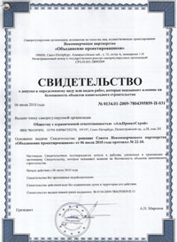
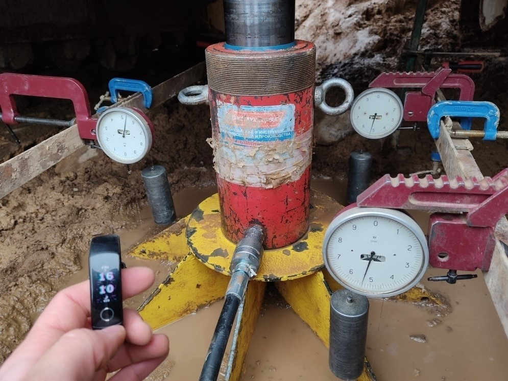
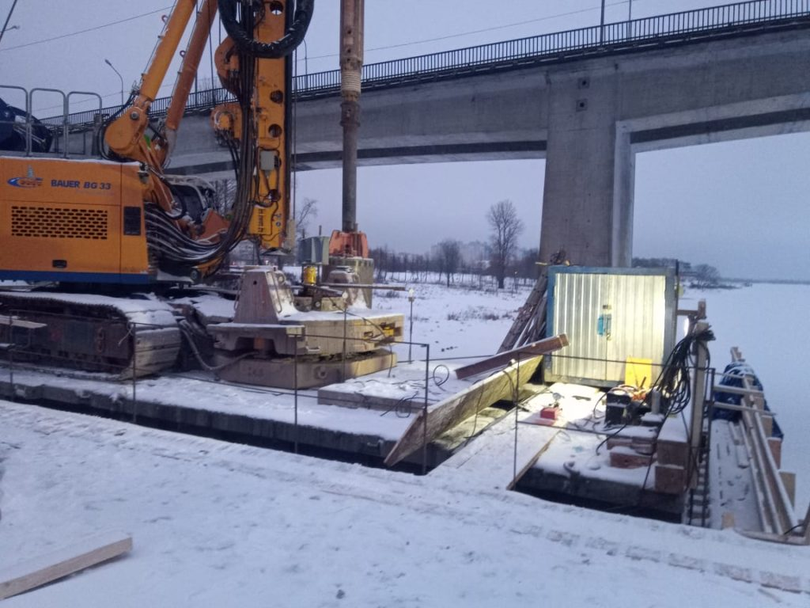

Дорожное проектирование - динамически развивающаяся
отрасль Новосибирска. Компания ООО "Точка опоры" предлагает комплексные решения
в области проектирования автомобильных дорог,
складских терминалов, логистических комплексов,
а так же обследование дорог, проектирование
фундаментов и искусственных оснований. Строительство
дорог, конструирование дорожных покрытий,
генеральные планы и многие другие процессы дорожного
строительства невозможны без соответствующих этапов оценки состояния
автомобильных дорог (обследование дорог).
Сотрудники компании Точка опоры имеют в наличии самое современное оборудование
для проведения штамповых испытаний дорожных одежд, которое позволяет
оценить несущую способность дорожных одежд с высокой
степенью точности. Расчет оснований и дорожных
одежд армированных геосинтетическими материалами
- одна из основных сфер деятельности компании.
Используемые ГОСТ'ы
За период своей деятельности компания не имела рекламаций со стороны заказчиков и неуклонно выполняла все гарантийные обязательства, оговоренные договорной документацией. В случае совместного сотрудничества мы не сомневаемся в том, что Вы будете удовлетворены качеством выполненных работ. Все проектные работы производятся точно в указанные сроки с ответственным отношением к их выполнению.
|  | Назначение штамповых испытаний: | Определение деформационных свойств - модуля деформации естественных и искусственных грунтов, оснований. | |
| Суть метода статических испытаний штампами: | |||
| Круглый плоский или винтовой штамп нагружается поэтапно (ступенями) посредством домкрата или пригружается грузом (ФБС блоки, плиты или тяжелая техника: экскаватор, грузовой автомобиль и т.д.). | На каждом этапе с помощью прогибомеров или датчиков перемещений замеряются деформации основания, соответствующие давлению на данном этапе |  | модуль деформации определяется в несколько раз точнее в полевых условиях с помощью штамповых испытаний в отличие от испытаний в лаборатории методом компрессионного сжатия. Это позволяет избежать ошибок при строительстве и оптимизировать затраты на строительство на миллионы рублей; грунт испытывается в естественном, ненарушенном состоянии; в несколько раз быстрее, чем в лаборатории |
| Преимущества штамповых испытаний: | |||